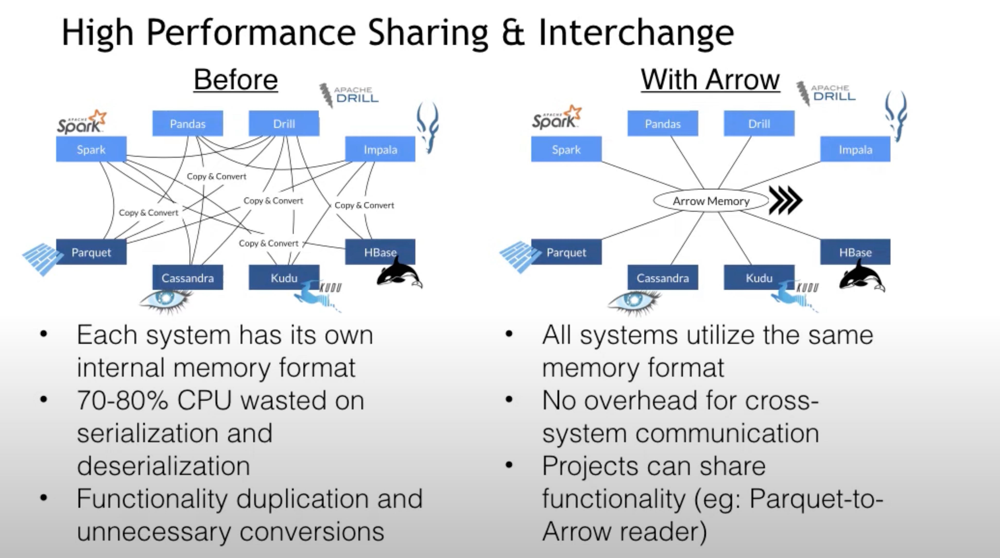
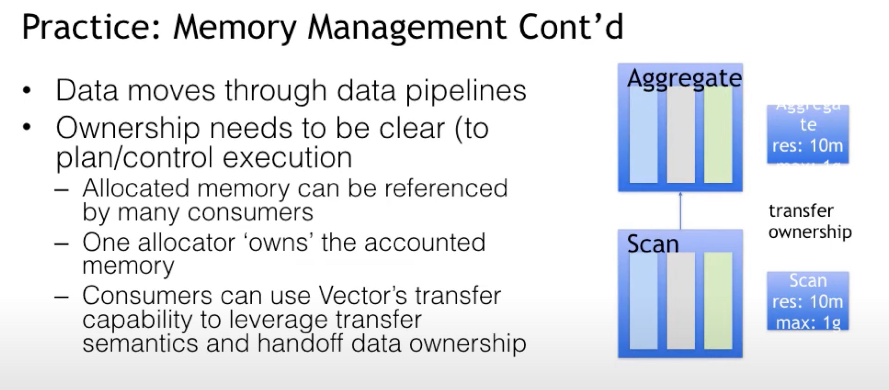
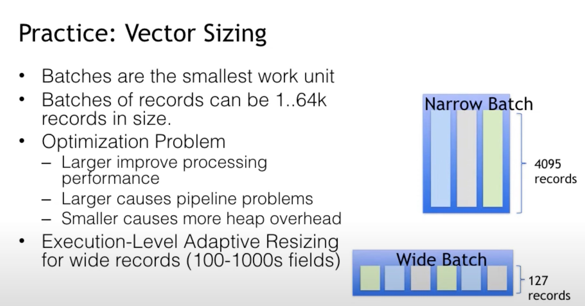
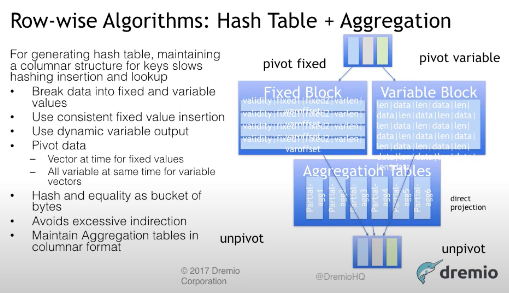

Apache Arrow Theory & Practice Explained
(105) Apache Arrow: Theory & Practice Explained // Apache Arrow Meetup 2017 - YouTube
2017年的分享，arrow定位主要是用于数据分析的内存格式以及数据交换格式，没有定义如何进行计算。在上面实现的计算引擎有许多比如dremio, spark, duckdb, datafusion(rust)

memory ownership 是可以转移的

根据数量字段动态调整batch size.

用行存格式来做agg.
